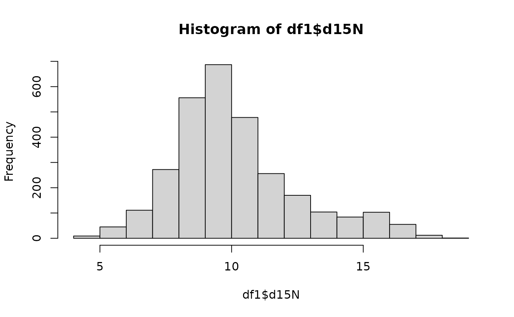

Using-IsoMemo-API.RmdgetRemoteDataAPI() retrieves the API to query the datagetMappingAPI() calls the mapping for the fields needed from the user API callsgetDatabaseList() returns a list of database names linked to the API callcallAPI() initiates the request to call
library(IsoMemo)
getDatabaseList() # returns a list of database names linked to the API call
#> [1] "14CSea" "CIMA" "IntChron" "LiVES"
df = getData(db="IntChron",category = "Location")
# see latitude and longitude of each site
head(df)
#> site
#> 1 Semna
#> 2 Semna
#> 3 Kumma
#> 4 Saqqara Step Pyramid Complex
#> 5 El-Bersheh
#> 6 BuhenThe function below retrieves ALL data and fields from all existing databases.
ALL_DATA = getData()
print(nrow(ALL_DATA)) # check how many rows
#> [1] 46046
levels(ALL_DATA$source) # check all the database sources are there
#> [1] "14CSea" "CIMA" "IntChron" "LiVES"
getDatabaseList() # tells what database are currently published
#> [1] "14CSea" "CIMA" "IntChron" "LiVES"
df1 = getData('LiVES')
summary(df1)
#> source id description
#> LiVES:3664 1000 : 1 Makrigialos , S Neo (I) : 22
#> 1001 : 1 Ajdovska Jama , S Neo (Lengyel): 10
#> 1002 : 1 Argus Bank , S Meso (Kongemose): 7
#> 1003 : 1 Spathes , S BZ : 5
#> 1004 : 1 Korinos , S BZ : 4
#> 1005 : 1 Rymnio , S BZ : 4
#> (Other):3658 (Other) :3612
#> d13C d15N latitude longitude
#> Min. :-25.00 Min. : 4.38 Min. :32.36 Min. :-10.439
#> 1st Qu.:-20.65 1st Qu.: 8.60 1st Qu.:40.42 1st Qu.: 7.506
#> Median :-19.89 Median : 9.70 Median :48.57 Median : 13.847
#> Mean :-19.66 Mean :10.14 Mean :47.22 Mean : 14.921
#> 3rd Qu.:-19.10 3rd Qu.:11.20 3rd Qu.:51.87 3rd Qu.: 22.717
#> Max. :-10.27 Max. :18.31 Max. :68.09 Max. : 84.050
#> NA's :60 NA's :721
#> site dateMean dateLower dateUpper
#> Durankulak : 83 Min. : 686 Min. : 758 Min. : 352
#> Aghia Triada : 70 1st Qu.: 3150 1st Qu.: 2559 1st Qu.: 2065
#> Aiterhofen : 60 Median : 4495 Median : 3970 Median : 3520
#> Lepenski Vir : 55 Mean : 4970 Mean : 4761 Mean : 4224
#> Varna : 55 3rd Qu.: 5421 3rd Qu.: 5360 3rd Qu.: 5000
#> Niederröblingen: 53 Max. :105000 Max. :130000 Max. :80000
#> (Other) :3288 NA's :7 NA's :7 NA's :7
#> dateUncertainty datingType
#> Min. : -17.5 expert :2225
#> 1st Qu.: 49.0 radiocarbon:1439
#> Median : 80.0
#> Mean : 125.5
#> 3rd Qu.: 125.0
#> Max. :12500.0
#> NA's :273How is the distribution of the variable “d15N” isotope?
hist(df1$d15N)
Let’s see the linear relationship between variables d13C and d15N: